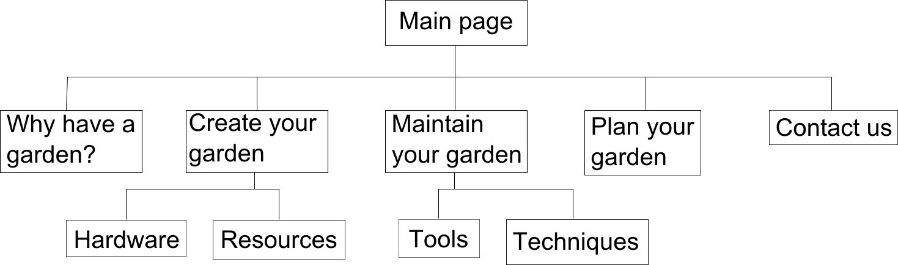
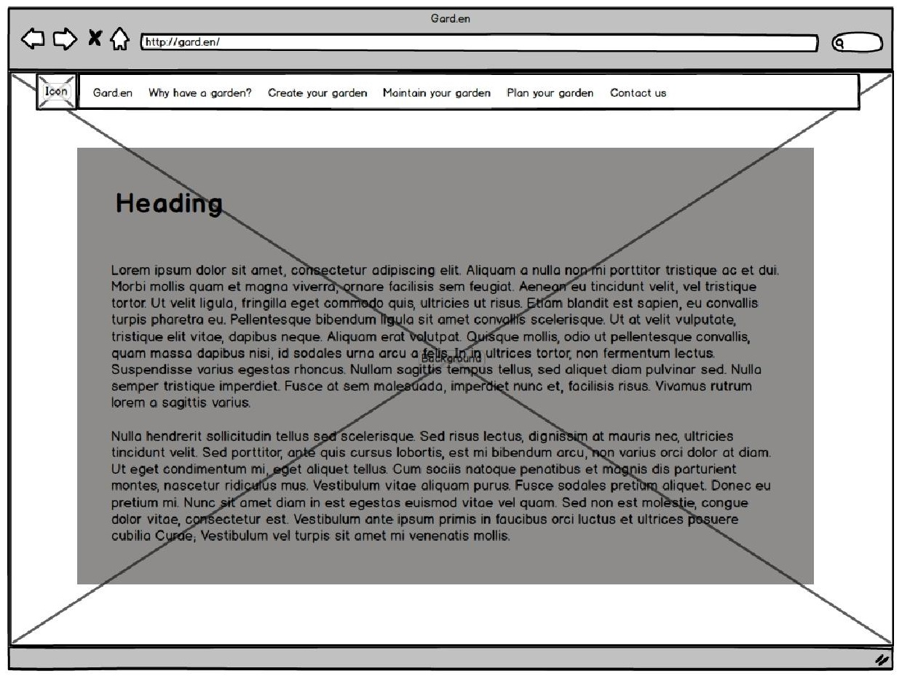

Site Structure:
All pages are linked to each other via the top menu, but the second level pages are intended to show subsets of their first-level parents in much greater detail. For example, the first-level pages would show general/basic/common information, while the second-level specialise and go into far greater detail. The parent pages also contain direct links to their children in the text, whereas other pages only have to nav menu.
Wireframe:
Font Scheme:
Main body text on the site is one of the following: Lucida Sans Unicode, Trebuchet Unicode MS, Lucida Grande, Verdana, Helvetica, any sans-serif. Headings are in Old Sans Black, followed by the same list as the body, and bolded for emphasis. If the first font in the list is not available on the host computer, the next will be attempted and so on. I chose sans serif fonts for a clean, readable and informal feeling. The text will contain a lot of serious information, and the font scheme should reflect this - no silly font with the letters formed from vegetables, for example. These fonts are very common, and will not help the website to stand out, but are popular because they are clean and tidy.
All of the fonts specifically used are designed to be readable on very small displays, such as smartphone screens, and have a widespread distribution on Windows, Mac and Linux operating system installations, so the site should look consistent no matter how it is viewed.
Interestingly, the primary font, Lucida Sans Unicode, was the first Unicode font ever developed. The presence of unicode fonts in the font scheme means that the page can be translated into any language and still keep the same font, preserving the look and feel of the site across cultures even if its popularity grows enormously.
The fonts used are all proportional rather than monospaced, as readability is more important than structure.
Colour Scheme:
The colour scheme consists of a lot of soft greens and blues - lends the site a natural, calming, and open feeling. The background image features trees rather than vegetables, despite the topic mainly being vegetable gardening, because vegetables tend to be far too colourful for a background and suitable only for embedded images on pages. Additionally, the information displayed on the site could be used in the growth of any kind of plant (even a large forest tree, if wanted).
The top menu is a light green, which darkens on mouse-over to assist users in accurate link selection. The main content area is set against a semi-transparent block of the same light green colour, to ensure readability is kept even with the varied brightness of the background image. Black text was chosen as it is more readable than white against the light green, and a darker green with white text combined with the dark background would have given the site an unwanted dark feel
Lines and Borders Scheme:
The intended feel of the site is open and natural - this is conveyed overtly by the topic of all text on the page and the forest background, but also subtly and subconsciously by the colour scheme. The lines and borders scheme attempts to reinforce this, with a menu bar at the top spanning the whole page, but the content box in the centre having a margin area around it. The complete shape formed by these objects is reminiscent of a minimalist tree design. The margins on the content box act the same as whitespace areas, as they only show the background image and not text. This, somewhat unintuitively, actually makes the page more readable and feel more open by constraining the reader's attention into a smaller area and preventing them from being overwhelmed by a whole page completely full of text.
The menu bar at the top shows sub-menus on hover for some elements. This is to group similar pages into one main summary/basic information page and detailed pages with more in-depth information on a subset of the topic, while still keeping the menu bar relatively clean and uncluttered.
Assumptions/Justifications:
App functionality is not included - just an example state in image form. This, combined with the example information section below, should be sufficient to show planned garden planning functionality.
User accounts are not implemented, although an account system could be used to save and load designs for repeat users.
Only the "Plan your garden" and main pages are filled with example text, all other pages are informative sections that would contain large amounts of text and images if complete.
The site is simplistic, with not DHTML functionality. This is because the nature of the site is well suited to a more traditional design - users are coming for information, nothing more, and do not need to be slowed down or distracted by fancy animations.
Usability test:
Issues identified:
1) User not expecting menu bar to have drop-down submenu - navigation layout confusing.
2) User tried to drag unconnected image onto mockup of drag-and-drop app.
3) User expected site icon to link back to homepage.
4) Page load times cause noticable delay between action and response.
Potential fixes:
1) Alter nav menu design to show drop-down menu's existence before mouseover - small arrow on right-hand side of menu items that have submenus.
2) Increase distance between app and related information to show they are separate entities, clarify app use through change in design.
3) Make icon link to homepage/include in same list item as text "Gard.en".
4) Use of DHTML techniques rather than separate pages could load all content at start and avoid delays during use.
References:
Menu tutorial
Colour picker
Wikipedia
Webfont generator
Colour Scheme Designer
Patio gardening reference
Balcony garden image 1
Balcony garden image 2
Balcony garden image 3
Background image
Carrot image
Mint image
Potato image
Icon
{kind=link}
{kind=link}
{kind=link}
{kind=link}
{kind=link}
{kind=link}
{kind=link}